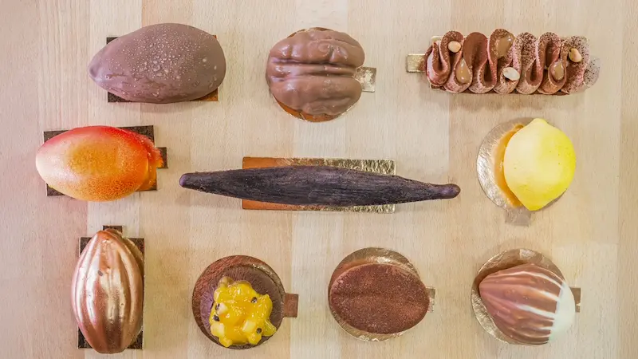

L'Art du Trompe-l'œil
Découvrez notre collection signature d'illusions gourmandes.
L’histoire du Fournil des Frères prend racine à Ajaccio, où trois frères grandissent avec une passion commune pour les métiers de bouche et le goût du travail bien fait.
Chacun suit alors sa propre voie pour se spécialiser :
Portés par l’envie d’entreprendre ensemble et de valoriser leur complémentarité, ils décident en 2011 de s’installer à Montpellier pour donner naissance au Fournil des Frères.
Depuis sa création, la maison s’attache à défendre un savoir-faire artisanal authentique, en sélectionnant des matières premières de qualité et en respectant les méthodes traditionnelles. Chaque produit est pensé avec exigence, générosité et passion, afin d’offrir une expérience gourmande sincère et mémorable.
Au fil des années, le Fournil des Frères s’est imposé comme une adresse incontournable, alliant tradition et créativité. Toujours en quête d’innovation, les trois frères revisitent les classiques de la boulangerie et de la pâtisserie, tout en restant fidèles à leurs valeurs : partage, authenticité et excellence.
"Excellente boulangerie ! Leurs trompe-l'œil sont incroyables, surtout la gousse de vanille. Accueil chaleureux."
"Une tuerie ! Leurs burgers au poulet maison pour le midi sont parfaits. Le pain brioché est super frais, je recommande."
"Le trompe-l'œil noix de pécan est une œuvre d'art, un vrai délice. On ressent la précision du chef pâtissier."
"Les viennoiseries pur beurre (croissants et pains au chocolat) sont excellentes et bien feuilletées. Du vrai fait maison !"
"Super adresse pour la pause déj à Montpellier. Les parts de pizzas et les paninis sont copieux, service rapide."
"Incroyable découverte ! Les spécialités sont très soignées. Un grand bravo aux trois frères pour leur concept unique."